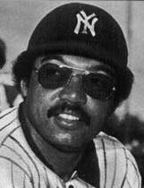

Less than a decade into its ownership of the Yankees, CBS moved to sell the team in 1972. In eight years, the team posted an $11 million loss under CBS; losing money in all but two years. Along with the decrease in attendance, the Yankees' television revenues fell by more than 80 percent from their peak, and in 1973 were more than $1 million below what the Mets earned from their broadcasting agreement. A group of investors, led by Cleveland-based shipbuilder George Steinbrenner, purchased the club from CBS on January 3, 1973 for $10 million. Despite an initial promise that he would "stick to building ships" and remain in the background, Steinbrenner proved to be a hands-on owner, clashing with Burke and forcing him out of his leadership position. Describing the level of control displayed by the lead owner, investor John McMullen stated, "There is nothing in life quite so limited as being a limited partner of George Steinbrenner."
The 1973 Yankees held the AL East lead entering August, but faded and ended the year fourth. The 1973 season was the team's last in Yankee Stadium before the building was renovated. The Yankees had become concerned about the drop in attendance and the poor conditions of the stadium's surroundings. For a time, New Jersey sought to attract sports teams to the Meadowlands Sports Complex, and New York City acted to prevent the Yankees from moving. The city paid $24 million to buy Yankee Stadium and the adjacent land, and in 1972 agreed to renovations. Work on the stadium finished in 1976, and the Yankees were required to play at the Mets' home field, Shea Stadium, in 1974 and 1975. During the first of those seasons, the team nearly won the AL East, finishing behind the Orioles in a race that was decided in the final games. The Yankees were helped by an early-season trade that brought first baseman Chris Chambliss to the team, and improved to 89 wins from 1973's 80 victories.
After the 1974 season, star pitcher Catfish Hunter was declared a free agent because of a skipped insurance payment. The Yankees signed him to a $3.75 million, four-year contract. It was the beginning of a long-term franchise philosophy of using free agency to acquire talent; Stout writes that they "were the first team to comprehend what free agency meant", as it provided an advantage over lower-spending rivals and generated fan and media interest. Hunter had 23 wins during the Yankees' 1975 season, but the team did not contend for the playoffs after July. New York fired manager Bill Virdon in August and hired Billy Martin as his replacement. With Martin as the helm, the Yankees returned to the postseason in their first season in the renovated Yankee Stadium, winning the 1976 AL East title by a 10 1/2-game margin over the Orioles. Munson was named AL MVP, with a .302 batting average and a total of 105 RBIs that was second-best in the AL. The 1976 American League Championship Series (ALCS) between the Yankees and Kansas City Royals went to a deciding fifth game, which was won by New York on a walk-off home run by Chambliss. The Yankees did not win a game against the Cincinnati Reds in the 1976 World Series.
Free agency was introduced more fully from the 1976 offseason; outfielder Reggie Jackson, who had spent one season with the Orioles after being traded by the Athletics, was the most significant player available in that first offseason. Steinbrenner signed Jackson to a five-year, $2.96 million contract, giving the Yankees a key player, but one who had difficulty fitting in with the rest of the team. Martin had opposed Jackson's signing, and many players were angered by comments Jackson made that were critical of Munson. Jackson and Martin nearly came to blows in the Yankees' dugout during one game against the Red Sox, in which Martin removed Jackson for being slow to field a ball. The incident sparked media reports of disputes between Martin and Steinbrenner, and further conflict between Martin and Jackson. The Yankees of the late-1970s, noted for clubhouse conflict and on-field success, were later nicknamed "The Bronx Zoo", after a book of the same name by pitcher Sparky Lyle, and at the time, New York and the baseball world were agog at their antics. The 1977 Yankees won the AL East and defeated the Royals in the 1977 ALCS. Trailing 3–2 in the top of the ninth inning of the decisive fifth game, the Yankees scored three times to gain a berth the World Series. Against the Dodgers, the Yankees prevailed in six games for their first Series championship since 1962. Jackson hit a record five home runs in the Series, including three in Game 6 on consecutive pitches, against three different Dodgers pitchers. Jackson gained his own candy bar and the nickname "Mr. October".
Before their 1978 season, the Yankees added relief pitcher Goose Gossage, even though their closer was reigning Cy Young Award winner Lyle. By the middle of July, the team was 14 games behind the Red Sox and infighting had begun again. After making comments to reporters criticizing both Jackson and Steinbrenner, Martin resigned and Bob Lemon was hired as manager. The Yankees closed the gap that Boston had opened on them, and by the start of a four-game series at Fenway Park on September 7, the Red Sox' lead was down to four games. Over the course of the series, nicknamed "The Boston Massacre", the Yankees outscored the Red Sox 42–9, winning each game. The teams finished the regular season with identical records, and an AL East tie-breaker game was held on October 2. Losing 2–0 in the seventh inning, the Yankees took the lead on a three-run home run by shortstop Bucky Dent, and eventually won 5–4. After beating the Kansas City Royals for the third consecutive year in the ALCS, the Yankees faced the Dodgers again in the 1978 World Series. They lost the first two games on the road, but then returned to Yankee Stadium and won three consecutive games before clinching a Series championship in Game 6 in Los Angeles. Pitcher Ron Guidry was the Cy Young Award winner in 1978, having posted 25 wins against 3 losses with a 1.74 ERA, and 248 strikeouts. Eighteen of his strikeouts came in his June 17 appearance against the California Angels, which broke the franchise record.
On August 2, 1979, Munson was killed in a plane crash. Martin, who had returned as manager after Steinbrenner fired Lemon in June, said that with his death, "The whole bottom fell out of the team." The 1979 Yankees finished fourth with an 89–71 record. Steinbrenner fired Martin after the season and replaced him with Dick Howser, who led the Yankees to 103 wins and the AL East title in 1980. Jackson led the AL with 41 home runs and posted a .300 batting average for the Yankees, who finished three games ahead of the Orioles. Their stay in the postseason was brief, as the Royals beat them in three straight games to win the ALCS. Before their 1981 campaign, the Yankees signed Dave Winfield to a 10-year contract worth $23 million, a record at the time. The season was shortened by a strike, and the Yankees qualified for the playoffs by virtue of leading the AL East when the work stoppage began. They defeated the Milwaukee Brewers in a divisional playoff round in five games. and won the AL pennant with three straight wins over the Athletics in the ALCS. The Yankees won the first two games of the 1981 World Series against Los Angeles, but the Dodgers won the next four games and the championship.